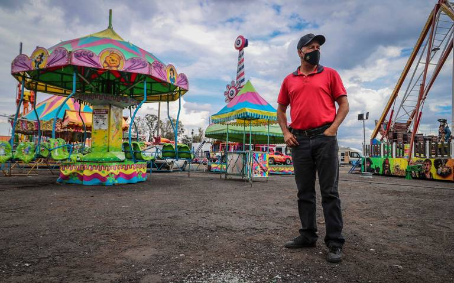

Nuestra Historia
Fundada en 2012, nuestra empresa comenzó con una pequeña flota de juegos mecánicos, pero con una gran visión: ofrecer momentos de alegría y emoción a nuestros clientes, sin importar sus habilidades físicas o sensoriales. A lo largo de los años, hemos crecido, ampliado nuestra oferta y mejorado nuestros servicios para asegurar que cada cliente disfrute de la máxima seguridad y diversión.
Misión
Nuestra misión es brindar un entretenimiento inclusivo y seguro que permita a todas las personas disfrutar de la diversión sin barreras. Nos esforzamos por ser líderes en el mercado de juegos mecánicos, ofreciendo servicios de alta calidad, con un enfoque en la seguridad, la sostenibilidad y la accesibilidad.
Visión
Convertirnos en la empresa de entretenimiento más confiable y accesible del país, conocida por ofrecer experiencias emocionantes que se adapten a las necesidades de todos, desde niños hasta adultos mayores, y que respeten la diversidad funcional.
Compromiso con la Inclusión
En Atracciones y Diversiones Gomez, creemos que la diversión debe ser accesible para todos. Por eso, nuestros juegos mecánicos están diseñados teniendo en cuenta las necesidades de las personas con discapacidades visuales y auditivas, y garantizamos que todos nuestros servicios cumplan con los estándares de accesibilidad y seguridad para que cada cliente pueda disfrutar sin limitaciones.
